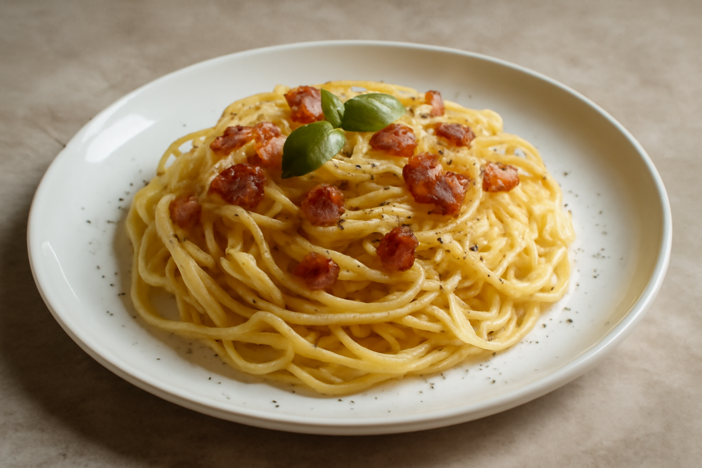
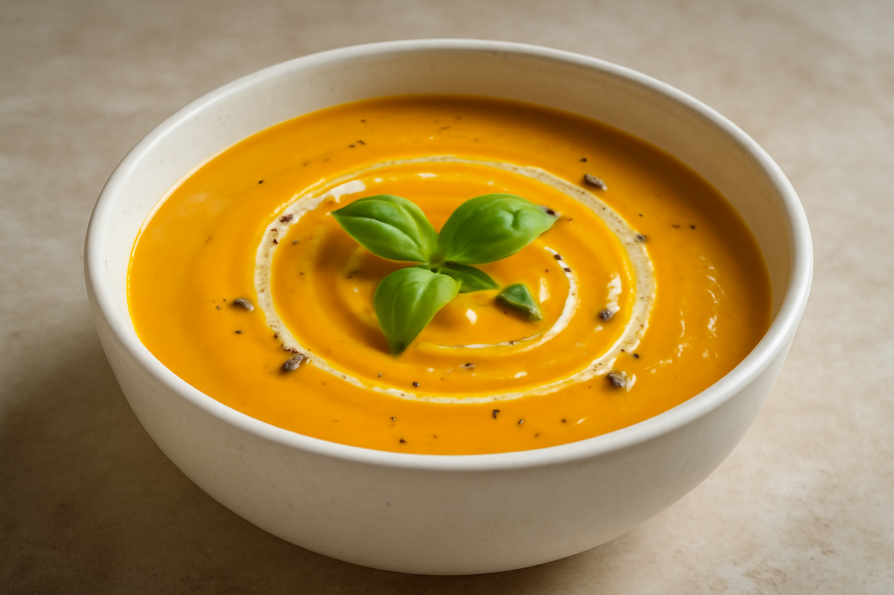
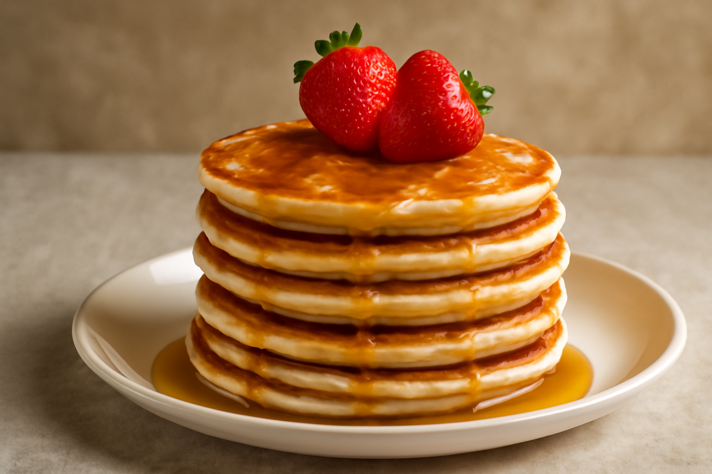
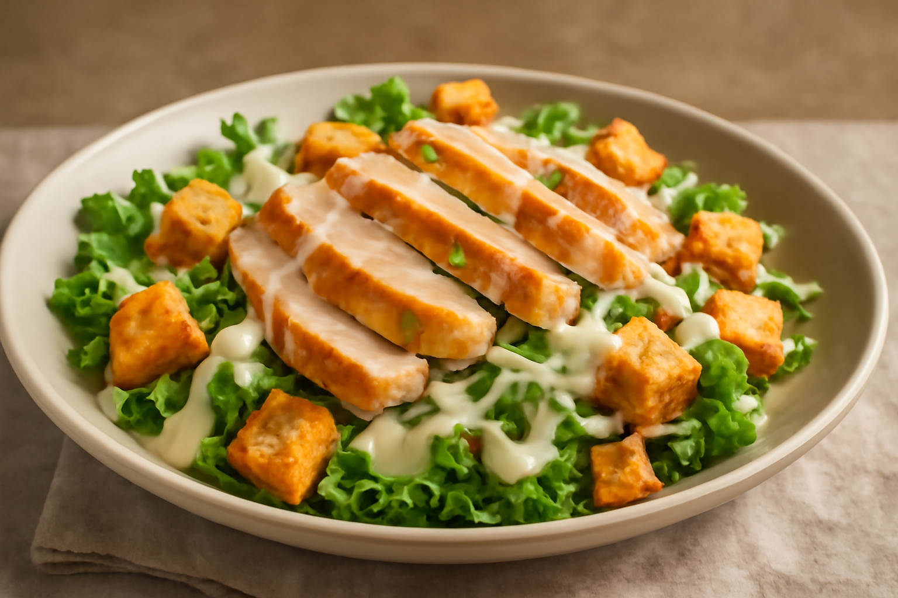
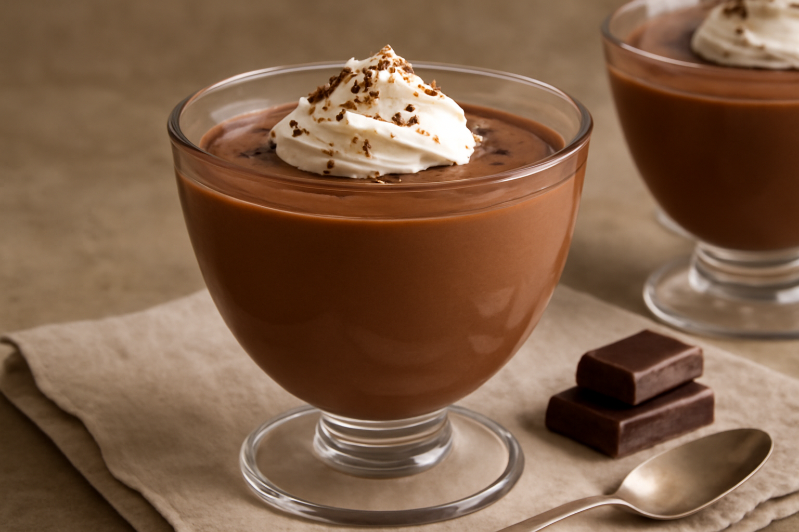
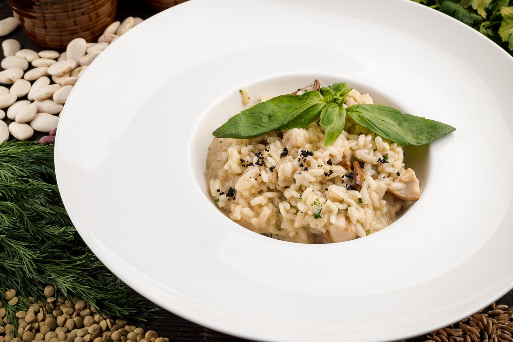

Галерея блюд
Немного о нашей кухне
В TastyDay мы тщательно подбираем ингредиенты и вдохновляемся мировыми кулинарными традициями. Наши блюда сочетают в себе простоту и изысканность, чтобы подарить вам незабываемые вкусовые впечатления.
Интересные факты о блюдах
- История карбонары уходит корнями в итальянские горы Абруццо.
- Овсяное печенье когда-то было любимым лакомством королевского двора Англии.
- Киноа признана одной из самых питательных круп благодаря высокому содержанию белка.





